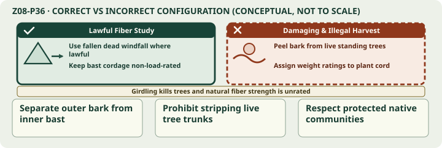

Z08-P36 · Rocks, minerals and materials · New manuscript
Bark Layers, Inner Bast Fibers and Conservation Ethics
Understand bark anatomy and natural bast fibers without girdling live trees or violating public-land plant protections.
When it applies · Educational study of birch outer bark and basswood/cedar/nettle inner bast fibers.
Equipment · Downed fallen branches only on lawful sites; never strip live trees.

Actions
- Understand that stripping bark around a living tree severs the cambium and phloem, killing the tree and violating public-land conservation law.[R09, R15, R18]
- Limit any educational study of outer papery bark or fibrous inner bast strictly to naturally fallen dead branches or lawfully permitted private windfall.[R09, R15, R18]
- Inspect fallen bark fibers for mold, brittleness, and short staple length, noting that natural cordage strength is highly variable and never life-safety rated.[R18, K04]
Failure recognition · Peeling live birch or cedar trees causes permanent ecological damage and legal penalties, while brittle rotted bast snaps under tension.[R09, R15, R18]
Verify · Zero live bark is cut or peeled, and any studied fiber is verified lawful downed material with non-load-rated limits.[R09, R18]
Stop or change course · Stop collecting bark or plant fibers in parks, SNAs, or anywhere landowner permission is absent.[R08, R09, R10, R18]
Evidence and editorial notes
- K04 · USDA Forest Service · Handtools for Trail Work (0523-2810-MTDC) (agency handbook)
- Section: Sharpening, Filing and Handle Maintenance · Conditions: Maintaining cutting edges and wood tool handles in field or shop
Support: Secure the tool firmly before filing or honing, keep fingers behind file guards, preserve factory bevel geometry without overheating steel and replace loose or cracked handles rather than taping them.
Limitations: Field touch-up honing does not correct chipped, cracked or heat-annealed steel blades. · Conflicting evidence: None; separates routine edge maintenance from unsafe handle patching.
Editorial note: Guides sharpening, rust prevention and handle-failure retirement cards. · Specialist reviewer: Tool maintenance and forestry safety
Primary source · checked 2026-11-24 - R08 · National Park Service / eCFR · 36 CFR 2.1 Preservation of Natural, Cultural and Archeological Resources (Current CFR)
- Section: 36 CFR 2.1 natural resource collecting prohibitions · Conditions: National Parks, Monuments, and federal recreation areas
Support: Collecting rocks, minerals, fossils, wood, or natural specimens is prohibited on National Park System lands unless specifically authorized.
Limitations: Rules vary across USFS, BLM, state, tribal, county, and private lands; check the governing land manager before taking any sample. · Conflicting evidence: None noted.
Editorial note: Prevents unlawful federal resource extraction. · Specialist reviewer: Public-lands resource manager
Primary source · checked 2026-11-25 - R09 · Minnesota DNR · Minnesota State Park Rules and Resource Collecting Restrictions (Current web edition)
- Section: State park natural-feature protection · Conditions: Minnesota State Parks and Recreation Areas
Support: Removing rocks, minerals, soil, or live vegetation from Minnesota State Parks is prohibited to protect natural resources.
Limitations: Verify jurisdiction boundaries before picking up specimens even along shorelines or trails. · Conflicting evidence: None noted.
Editorial note: Bounds state-park material collection. · Specialist reviewer: Minnesota DNR resource manager
Primary source · checked 2026-11-25 - R10 · Minnesota DNR · Scientific and Natural Areas Visitor Rules and Prohibitions (Current web edition)
- Section: No collecting plants, animals, rocks or fossils; Foraging · Conditions: Minnesota Scientific and Natural Areas, subject to the actual site rules
Support: Leave natural features in place unless the site lists an applicable exception or there is a valid authorization.
Limitations: Certain named sites have limited berry or mushroom exceptions. They do not extend to rocks or general digging. · Conflicting evidence: Conditions are recorded in the A03 audit.
Editorial note: Enforces SNA zero-collection boundaries. · Specialist reviewer: Minnesota DNR SNA manager
Primary source · checked 2026-11-25 - R15 · Minnesota DNR · Native Trees of Minnesota Identification Reference (Current web edition)
- Section: Regional wood species, grain, bark, and moisture variability · Conditions: Dead downed wood and natural bast fibers in Upper Midwest forests
Support: Wood density, grain straightness, resin content, and decay state vary widely by species, tree part, and moisture history.
Limitations: Visual grain inspection cannot certify structural load capacity; avoid cutting live trees where prohibited and reject punky or cracked wood. · Conflicting evidence: None noted.
Editorial note: Reconciles B007 wood notes with material limits. · Specialist reviewer: Forestry and wood-science specialist
Primary source · checked 2026-11-25 - R18 · Minnesota DNR · Minnesota Native Plant Communities and Biomes (Current web edition)
- Section: Natural plant fiber harvest limits and conservation ethics · Conditions: Bast fibers, rushes, sedges, and woody stems in regional biomes
Support: Harvesting fibrous plants without landowner permission or in protected native plant communities damages ecosystems and may violate law.
Limitations: Strength of hand-twisted plant cordage varies sharply with retting, moisture, and knots; never assign life-safety loads. · Conflicting evidence: None noted.
Editorial note: Connects Z08 fibers to Z09 load limits and law. · Specialist reviewer: Botanist and materials specialist
Primary source · checked 2026-11-25
Current assessment · A04-R18 (2026-11-25) · Open: support partial or missing (A04): Site limits are supported. Broader landownership and habitat-effect statement needs site and specific governing authority. Limits: Specialist review PENDING (Botanist and materials specialist); publication HOLD. All release decisions pending.
Source lineage · New manuscript (Z08 P16 natural fibers) · Classification · New manuscript.